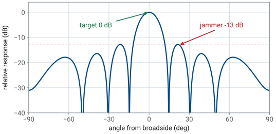
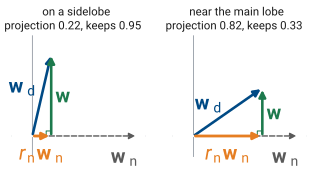
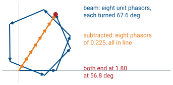
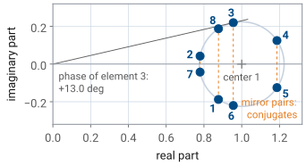
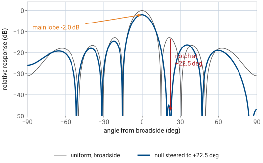
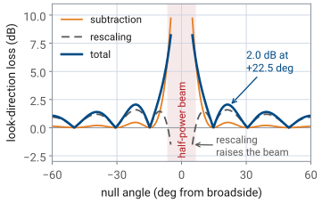
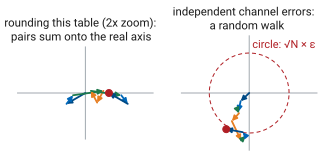
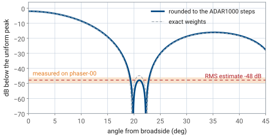

L24 - Null Steering#
Null Steering
A deep null on the interferer lowers the main lobe by only about 2 dB.
Lesson 24 · Antennas, Phased Arrays, and Radar Systems · Dr. Neil Rogers
Printing
To print the slides, switch to present mode and print: one slide a sheet, with room for notes. Print from read mode for the whole lesson.
Learning Objectives
- I can calculate null-steering weights and implement pattern nulls on the ADALM-PHASER.
Lesson 23 catalogued the three ways a steered pattern breaks on its own: grating lobes when the elements are too far apart, squint when the frequency moves off the design point, and quantization lobes when the phase shifter runs out of bits. Those were accidents, and the work was to avoid them. Today we break the pattern on purpose. We place a deep null exactly where an interferer sits, keep the main beam pointed where it was, and lose a known amount of main-lobe gain doing it.
A Loud Signal in a Sidelobe
The target is at broadside; an interferer 10 dB stronger is at +22.5°.
The uniform array’s first sidelobe there is −13 dB.
The interferer arrives only \(10 - 13 = -3\) dB below the target.

So far we have judged every array by its main lobe. Peak gain, beamwidth, and scan loss all describe where the energy goes. That is the right measure when the only thing in the field of view is the target. It is the wrong measure when something else in the field of view is louder than the target.
Consider the PHASER looking at a target on boresight, and a second transmitter at +22.5° that is 10 dB stronger at the aperture. The array does not reject the interferer because it is off-axis; it rejects it by the pattern level in that direction, and the first sidelobe of a uniform 8-element array is only −13 dB. The interferer therefore arrives at the beamformer output \(10 - 13 = 3\) dB below the target. A 3 dB margin leaves no room for a fade or a fluctuation in the target, and the receiver can lock onto the wrong signal.
Note
The military case is the familiar one: a jammer placed in a sidelobe is the reason sidelobe-level specifications exist at all, and null steering is the countermeasure. The physics is the same for a base station on the same frequency, a radar altimeter on the next aircraft, or a strong multipath reflection off a hangar. Null steering handles anything loud that is not where you are looking the same way.
Null Depth Versus Transmit Power
Raising the target 20 dB takes 100 times the transmit power.
Lowering the pattern 20 dB at +22.5° lowers the main lobe about 2 dB.
Lowering the pattern at the interferer helps more than raising it at the target.
There are two remedies. We can raise the target’s return by 20 dB, which for a radar means a hundredfold increase in transmit power, a much larger amplifier, and a much brighter signature for anyone listening. Or we can push the pattern level at +22.5° down by 20 dB, which lowers the main-lobe gain by about 2 dB and takes a weight calculation the processor finishes in microseconds. The second option is why every modern radar and electronic-warfare receiver steers nulls.
We judge an array by the ratio of the wanted signal to the unwanted one. When the interferer is stronger than the target, moving the pattern down at one angle helps more than moving it up at another.
Complex Weights
The Element Gains slider sets \(a_n\); the Phase Control entry sets \(\phi_n\).
Lesson 18 used phase only, Lesson 22 amplitude only; a null needs both.
To place a null we need control the previous lessons did not use. Lesson 18 steered the beam with phase only, holding every element at full gain. Lesson 22 tapered the sidelobes with amplitude only, holding every element in phase. Null steering uses both at once, so from here on each element carries a complex weight
with \(a_n\) the element’s amplitude setting and \(\phi_n\) its phase setting. On the PHASER, \(a_n\) is the Element Gains slider for that channel and \(\phi_n\) is its Phase Control entry. The two ADAR1000s provide both controls on all eight elements, which is exactly the degrees of freedom this lesson uses.
The Steering Vector
\(\mathbf{v}(\theta)\) belongs to the direction, not to the settings.
\(y(\theta)\) is Lesson 16’s array factor with general weights.
Write the array response the way the elements see the world. A plane wave arriving from angle \(\theta\) reaches element \(n\) a distance \(nd\sin\theta\) earlier than it reaches element 0, so the signal at element \(n\) carries the extra phase \(nkd\sin\theta\). Collect those factors into the steering vector

The figure is the one Lesson 18 used for the same extra path. Each element’s entry in the steering vector is that path converted to phase, so the \(n\)-th entry is \(v_n(\theta) = e^{jnkd\sin\theta}\). The steering vector is not a property of the array’s settings. It is a property of the direction, and it says how a wave from that direction is spread in phase across the aperture.
The beamformer forms one number from the eight element signals by weighting and summing them, so the array’s response to a wave from \(\theta\) is the dot product
This is the array factor of Lesson 16 with the weights left general. Every pattern in Module 3 is one evaluation of this sum.
The Conjugate Steering Vector
That is the L18 phase ramp \(\Delta\phi = kd\sin\theta_0\), written as a vector.
The weight carries the negative of the arrival phase.
Flip the sign and the null lands at \(-\theta_1\).
Now read the beam-steering result of Lesson 18 in this language. To point the beam at \(\theta_0\) we want all \(N\) terms of the sum to add in phase when \(\theta = \theta_0\), which happens when each weight cancels its own steering-vector phase:
The conjugate steering vector is the progressive phase ramp \(\Delta\phi = kd\sin\theta_0\) you have been programming into the ADAR1000s since the L18 Lab. With \(\mathbf{w}_\text{d}\) applied, \(y(\theta_0) = N\) — every element contributes a unit phasor pointing the same way — and that is the peak of the pattern.
Note
Two conventions matter and both are course-wide. We measure angles \(\theta\) from broadside, and the weight that steers to \(\theta_0\) carries \(e^{-jnkd\sin\theta_0}\), the negative of the arrival phase. Getting the sign backwards puts the beam, or the null, at \(-\theta_0\). On the PHASER that shows up as a notch on the wrong side of the sweep, which is the most common error in the L24 Lab.
The Null Problem
The response at the interferer must be zero: \(\mathbf{w}^{T}\mathbf{v}(\theta_1) = 0\).
Stay as close to \(\mathbf{w}_\text{d}\) as possible.
We subtract part of a beam aimed at \(\theta_1\):

Here is the problem stated exactly. We have the beam-steering weights \(\mathbf{w}_\text{d} = \mathbf{v}^{*}(\theta_0)\), and we want a new weight vector \(\mathbf{w}\) that satisfies two conditions at once:
the response at the interferer angle is zero, \(\mathbf{w}^{T}\mathbf{v}(\theta_1) = 0\);
\(\mathbf{w}\) stays as close to \(\mathbf{w}_\text{d}\) as possible, so the main beam does not move and does not lose more gain than it must.
The first condition is one complex equation in eight complex unknowns, so there are many solutions. The second condition picks one, and it picks a change along \(\mathbf{w}_\text{n}\), the beam aimed at the interferer. Split any change \(\Delta\mathbf{w} = \mathbf{w} - \mathbf{w}_\text{d}\) into a part along \(\mathbf{w}_\text{n}\) and a part \(\mathbf{u}\) orthogonal to it, \(\mathbf{w}_\text{n}^{H}\mathbf{u} = 0\). Since \(\mathbf{v}(\theta_1) = \mathbf{w}_\text{n}^{*}\), the orthogonal part contributes \(\mathbf{u}^{T}\mathbf{v}(\theta_1) = \mathbf{w}_\text{n}^{H}\mathbf{u} = 0\) at the interferer. It does nothing toward the null and only lengthens the change, so the smallest change that places the null is a multiple of \(\mathbf{w}_\text{n}\) alone.
The figure draws that geometry as if the eight complex weights were two-dimensional arrows; it is a schematic, not to scale. Removing the part of \(\mathbf{w}_\text{d}\) that lies along \(\mathbf{w}_\text{n}\) leaves \(\mathbf{w}\) at right angles to \(\mathbf{w}_\text{n}\), which is the null. When the interferer sits on a sidelobe, \(\mathbf{w}_\text{d}\) and \(\mathbf{w}_\text{n}\) are nearly perpendicular and little is removed. When it sits near the main lobe, they nearly line up, and removing the shared part removes most of the beam with it. The cosine of the angle between them is \(\vert r_\text{n}\vert\), and the look direction keeps \(1 - \vert r_\text{n}\vert^2\) of its response.
Build the beam that points at the interferer. Define the second steering weight vector exactly as we defined the first, but aimed at \(\theta_1\):
Applied on its own, \(\mathbf{w}_\text{n}\) would point a full-gain beam straight at the interferer. That is the opposite of the goal, but subtracting part of it from \(\mathbf{w}_\text{d}\) produces the null.
Subtract some of it. Try a weight vector of the form
with one complex number \(r_\text{n}\) still to be chosen. Any \(r_\text{n}\) leaves the main beam roughly in place, because we are subtracting a small multiple of a vector that points somewhere else. One particular \(r_\text{n}\) makes the response at \(\theta_1\) vanish.
The Weight-Subtraction Rule
One division gives an exact null, with no iteration.

We substitute the trial weights into the response at the interferer. The superscript \(H\) is the conjugate transpose: \(\mathbf{a}^{H}\mathbf{b} = \sum_n a_n^{*} b_n\). Because \(\mathbf{w}_\text{n} = \mathbf{v}^{*}(\theta_1)\), the steering vector at the interferer is \(\mathbf{v}(\theta_1) = \mathbf{w}_\text{n}^{*}\), and every product with it becomes a conjugate-transpose product:
The first is the desired beam’s own response toward the interferer; the second is \(N\) because every entry of \(\mathbf{w}_\text{n}\) has unit magnitude. Setting the response to zero then fixes \(r_\text{n}\):
Substituting this \(r_\text{n}\) into the second line makes its two terms equal, so the response at \(\theta_1\) is zero.
The figure shows the two terms as phasor chains at \(\theta_1 = 22.5^\circ\). The desired beam’s eight unit phasors each turn \(\psi_1 = 67.6^\circ\) from the last, so they wind around and end at \(N r_\text{n}\), a point 1.80 from the origin. The subtracted beam was built to cancel that turning, so all eight of its phasors point the same way; scaled by \(r_\text{n}\), each is 0.225 long and they reach the same point in a straight line. The null is the difference between two chains that end at the same place. The null is exact, not approximate, and it takes one division, with no iteration and no optimizer.
The Projection Coefficient
On a −13 dB sidelobe, \(\vert r_\text{n}\vert = 0.22\).
In the main lobe, \(\vert r_\text{n}\vert \to 1\).
In a natural null, \(r_\text{n} = 0\) and the weights do not change.
The ratio \(r_\text{n} = \mathbf{w}_\text{n}^{H}\mathbf{w}_\text{d}/\mathbf{w}_\text{n}^{H}\mathbf{w}_\text{n}\) is a projection: it measures how much of the null-direction beam is already contained in the desired beam. Subtracting \(r_\text{n}\mathbf{w}_\text{n}\) removes precisely that much and no more, which is why the main beam survives.
There is a second reading that is more useful at the board. Expand the numerator for a broadside beam, \(\mathbf{w}_\text{d} = [1, 1, \ldots, 1]\):
The projection coefficient is the uniform array’s own normalized pattern evaluated at the null angle. If the interferer sits on a −13 dB sidelobe, then \(\vert r_\text{n}\vert = 0.22\). If it sits in the main lobe, \(\vert r_\text{n}\vert\) approaches 1 and we are subtracting nearly the whole beam. If it happens to sit in one of the array’s natural pattern nulls, \(r_\text{n} = 0\), the rule returns \(\mathbf{w} = \mathbf{w}_\text{d}\) unchanged, and the null was already there.
\(r_\text{n}\) is the uniform pattern’s level at the null angle, and it sets the main-lobe loss before we compute any weight.
Weights on a Circle
Each weight tip sits on a circle of radius \(\vert r_\text{n}\vert\) around 1.
Amplitudes stay within \(1 \pm \vert r_\text{n}\vert\); phases move a few degrees.
A null is a small change to the original beam.

Geometrically, each element weight is the number 1 minus a phasor of length \(\vert r_\text{n}\vert\) that rotates by \(kd\sin\theta_1\) from element to element. The eight weight tips lie on a circle of radius \(\vert r_\text{n}\vert\) centered on the original weight, so the amplitudes spread between \(1 - \vert r_\text{n}\vert\) and \(1 + \vert r_\text{n}\vert\) and the phases vary a few degrees either side of the ramp. A null is a small, structured perturbation of the original beam. The figure plots the eight weights of the 22.5° example. Each one’s gain is its distance from the origin and its phase is the angle of the line from the origin, which is why the phases stay within 13°. Elements mirrored about the array center land at mirror points across the real axis, the conjugate pairs that make the gains symmetric and the phases antisymmetric.
Worked Example: Null at +22.5°
\(\vert r_\text{n}\vert\) is −13.0 dB, the first sidelobe level.
Take the course array — eight elements, \(d = 14\ \text{mm}\), HB100 source at 10.525 GHz, so \(\lambda = 28.5\ \text{mm}\) and \(d/\lambda = 0.491\). Point the beam at broadside and null an interferer at \(\theta_1 = +22.5^\circ\).
Worked example — null at +22.5° from a broadside beam
Element-to-element phase at the null angle. With \(kd = 2\pi(0.491) = 3.085\) rad,
Projection coefficient. The beam is broadside, so \(\mathbf{w}_\text{d}\) is all ones and \(r_\text{n}\) is the uniform pattern at 22.5°:
That −13 dB is the first sidelobe level of the uniform 8-element array, which is why the interferer arrives only 3 dB below the target.
Weights. Element by element, with the \(r_\text{n}\) and \(\psi_1\) above,
and the eight magnitudes lie between 0.78 and 1.19, inside the circle’s bounds \(1 \pm 0.225\).
The PHASER Settings
Element |
Gain (%) |
Phase (deg) |
|---|---|---|
1 |
75 |
−12.1 |
2 |
65 |
+3.1 |
3 |
82 |
+13.0 |
4 |
100 |
+6.0 |
5 |
100 |
−6.0 |
6 |
82 |
−13.0 |
7 |
65 |
−3.1 |
8 |
75 |
+12.1 |
A sign error in these 13° offsets is easy to miss.
The Element Gains sliders are percentages of full scale, so scale the largest weight to 100 % and enter the weight angles as phase offsets:
Enter each phase with its sign. A Phase Control offset is the weight’s own phase, the same convention Apply uses when it writes \(-n\Delta\phi\) to steer to \(+\theta_0\) (L18 Lab). Lesson 18’s \(+n\Delta\phi\) is the backend’s delay setting, which carries the opposite sign, so these offsets are entered as computed and not converted to it.
The gains are symmetric and the phases are antisymmetric, and every null placed to one side of a broadside beam produces that pattern. The reason is in \(r_\text{n}\). Summing the geometric series gives
a real number times the phase \((N-1)\psi_1/2\), so \(w_n = 1 - r_\text{n}e^{-jn\psi_1}\) carries the phase \((N-1-2n)\psi_1/2\) in its second term. Replacing \(n\) with \(N-1-n\) flips the sign of that phase, so \(w_{N-1-n} = w_n^{*}\): elements mirrored about the center have equal gains and opposite phases. Note how small the phase offsets are: the largest is 13 degrees. Null steering is not a large change to the array’s settings, and that is precisely why it is so easy to get wrong by a sign.
The Notch on the Pattern

The response at +22.5° is exactly zero, and the beam stays at broadside.
The peak drops 2.0 dB in theory and 1.8 dB on phaser-00.
The response at +22.5° is exactly zero. The main beam stays at broadside and its peak drops 2.0 dB, of which 0.4 dB is the subtraction itself and the rest is the rescaling that keeps every gain at or below 100 %. The measured loss on phaser-00, one of the course kits, was 1.8 dB.
Null Steering on the PHASER
The widget below applies the weight-subtraction rule to the course array and draws the result. Drag the null angle and watch three things: where the notch lands, how the eight element gains and phases redistribute, and how the main-lobe loss pill tracks \(\vert r_\text{n}\vert\) rather than the null angle itself. Then switch the weights from Ideal to PHASER, which rounds every phase to the ADAR1000’s 2.8125° step and every gain to 1 %, and adds a floor 48 dB below the uniform peak, where the notch bottomed out on a course kit — the notch is no longer infinitely deep and settles at the depth the hardware showed.
Main-Lobe Loss Versus Null Angle

The loss grows from 2.0 dB at 22.5° to 2.9 dB at 10° and 8.2 dB at 5°.
A null inside the half-power beam is a resolution problem.
The main-lobe loss is set by \(\vert r_\text{n}\vert\). The subtracted beam’s response in the look direction is the conjugate of the projection: since \(\mathbf{v}(\theta_0) = \mathbf{w}_\text{d}^{*}\), the product \(\mathbf{w}_\text{n}^{T}\mathbf{v}(\theta_0) = \mathbf{w}_\text{d}^{H}\mathbf{w}_\text{n} = N r_\text{n}^{*}\). So the response at \(\theta_0\) is
a loss of 0.45 dB for the 22.5° example. The Element Gains sliders then divide every weight by the largest magnitude, \(\max\vert w_n\vert = 1.19\), which loses another \(20\log_{10}(1.19) = 1.53\) dB, so the total loss is
Walk the null in toward the beam and the subtraction term grows fast: 1.5 dB at \(\theta_1 = 10^\circ\), 5.1 dB at 7°, and 9.7 dB at 5°. The rescaling term does the opposite. It is 1.4 dB at 10° and 0.5 dB at 7°, and at 5° every weight magnitude is below 1, so scaling the largest up to 100 % raises the beam 1.5 dB. The totals are 2.9, 5.6, and 8.2 dB. As \(\theta_1\) enters the main lobe \(\vert r_\text{n}\vert \to 1\), the eight weights cancel one another, and what is left after rescaling is a split beam with a hole where the target used to be. A null inside the half-power beamwidth is not a null-steering problem, it is a resolution problem, and the answer is to move the beam or wait for the geometry to change.
Quantization and Null Depth
One-step errors allow a null about 48 dB down.
Three bits allow only about 22 dB.

The weights above are exact real numbers, and the ADAR1000 accepts neither. Each element’s phase lands on a 2.8125° grid and each gain on a 1 % grid, so each weight carries a small error \(\delta w_n\). If those errors are independent, at the null angle they add in RMS rather than coherently, and the residual response relative to the beam peak is
The figure draws the eight errors at the null, each turned by its own steering-vector phase. Each piece of that estimate has a mechanism. Rounding to the nearest step leaves an error spread evenly between \(-\text{LSB}/2\) and \(+\text{LSB}/2\), and a uniform spread of width LSB has an RMS value of \(\text{LSB}/\sqrt{12}\). A small phase error \(\delta\phi\) moves a weight of magnitude near 1 by about \(\delta\phi\), so the phase and gain errors both count as fractions of a unit weight and add in quadrature to \(\epsilon_\text{rms}\). At the null the exact weights sum to zero, so the response is the sum of the eight errors alone, each turned by its own steering-vector phase. Independent errors add in power, not in voltage, so their sum has an RMS size of \(\sqrt{N}\ \epsilon_\text{rms}\), and dividing by the beam peak \(N\) gives \(\epsilon_\text{rms}/\sqrt{N}\).
With \(\text{LSB} = 2.8125^\circ = 0.0491\) rad and 1 % gain steps, \(\epsilon_\text{rms} = 0.0145\), and the residual sits 46 dB below the nulled beam’s peak, which is 48 dB below the uniform peak. That is the same \(-6B\) scale as the quantization sidelobes of Lesson 23, a few decibels deeper because the error is spread over eight elements. Halve the bits and the floor rises fast: a 3-bit phase shifter cannot hold a null deeper than about 22 dB.
Rounding this particular table does less damage than the estimate, as the left half of the figure shows. Rounding keeps the gains symmetric and the phases antisymmetric (the mirror pairs of The PHASER Settings), so each pair sums to a real number, the pattern referred to the array center stays real and still passes through zero, and the null only moves a quarter of a degree, to +22.3°. What fills a null on the bench is error that does not share that symmetry: each channel’s own calibration residue in gain and phase. The estimate is the depth those errors allow when they are about one step in size, and −48 dB below the uniform peak is the number to quote.
Measured Null Depth

On phaser-00 the notch reached 46 to 50 dB below the uniform peak.
The interferer ends up about 36 dB below the target, not 3 dB.
The estimate is what the hardware shows. On phaser-00, a course kit, with the table above loaded, the notch bottomed out 46 to 50 dB below the uniform peak, right on the band the estimate predicts, while the main lobe dropped 1.8 dB. The interferer of the first frame, 10 dB stronger than the target, now arrives \(10 - 48 + 2 = -36\) dB relative to it, where the uniform taper left it at −3 dB.
The notch landed at +25.7°, about 3° from the design angle, which is within what aligning the kit by eye allows.
Up to N−1 Nulls, All Static
One of the eight weights holds the beam, which leaves at most seven nulls.
Nulls at both ±22.5° lower the main lobe 3.7 dB.
Every weight assumed a known \(\theta_1\). If the interferer moves, recompute.
An \(N\)-element array has \(N\) complex weights. One holds the main beam, which leaves at most \(N-1\) independent nulls. The PHASER can therefore null up to seven directions at once, though long before that the pattern has been so heavily reshaped that the main lobe is barely recognizable. The procedure generalizes by subtracting one term per interferer and solving the resulting small system. Each null lowers the main lobe further: nulls at both ±22.5° lower it 3.7 dB, against 2.0 dB for the one at +22.5°.
We computed every number in this lesson from an angle we had to know in advance. If the interferer moves, the null stays where it was and someone has to recompute and reload eight gains and eight phases. That is the limitation the L24 Lab confronts.
Summary
Symbol / idea |
What it is |
Number to remember |
|---|---|---|
\(\mathbf{v}(\theta)\) |
steering vector, \(v_n = e^{jnkd\sin\theta}\) |
the direction, not the setting |
\(\mathbf{w}_\text{d} = \mathbf{v}^{*}(\theta_0)\) |
beam-steering weights |
the L18 phase ramp, written as a vector |
\(\mathbf{w} = \mathbf{w}_\text{d} - r_\text{n}\mathbf{w}_\text{n}\) |
weight-subtraction rule |
one division, exact null |
\(r_\text{n} = \mathbf{w}_\text{n}^{H}\mathbf{w}_\text{d} / \mathbf{w}_\text{n}^{H}\mathbf{w}_\text{n}\) |
projection of the null beam on the desired beam |
\(= \) uniform pattern level at \(\theta_1\) |
\(\vert r_\text{n}\vert\) at a −13 dB sidelobe |
sets the main-lobe loss |
0.225 |
Main-lobe loss, null at +22.5° |
main-lobe loss |
2.0 dB theory, 1.8 dB measured |
PHASER settings, null at +22.5° |
gains |
75, 65, 82, 100, 100, 82, 65, 75 % |
Depth estimate |
\(\epsilon_\text{rms}/\sqrt{N}\), ADAR1000 steps |
\(\approx -48\) dB below the uniform peak |
Measured notch |
phaser-00 |
−46 to −50 dB below the uniform peak |
Maximum nulls |
one weight holds the beam |
\(N - 1 = 7\) |
Practice
Looking Ahead
The L24 Lab loads this table, sweeps the beam, and measures the notch.
MVDR then lets the array compute its own weights from its own data.
It runs on the two digital channels, the hybrid architecture of Lesson 17.
The L24 Lab takes these weights to the bench. You will compute the gain and phase table for an interferer angle, type it into the Element Gains and Phase Control sections of the Phaser GUI, sweep the beam, and measure the notch you predicted. Then the lab does the thing this lesson cannot: instead of telling the array where the interferer is, it lets the array estimate the interference from the received data itself and compute its own weights. That is MVDR, the minimum-variance distortionless-response beamformer, and it needs the two digital channels rather than the analog element sums — the first lab to use the hybrid architecture of L17. Read the Digital Beam Forming section of the GUI inventory before class so the Mode, Snapshots, and Diagonal Load controls are not new to you.